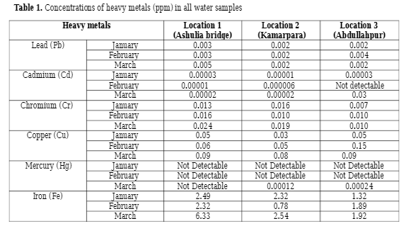

Analytical Chemistry is a branch of chemistry that
focuses on collecting, processing, and sending out
quantitative data on the composition and structure of
matter. It determines what matter is and how much of it
is there.
An example of Ananytical Chemistry being used is
determining the concentration if impurities in the water
to see if it is potable and safe enough to be consumed.

This is a table from a research
paper by R. Afrin, M. Y. Mia, and S. Akter on the heavy metal
concentrations in the Turag River in Bangladesh. The values show
the parts per million (ppm) of each metal detected in the water
from January to March in 3 different parts of the river.